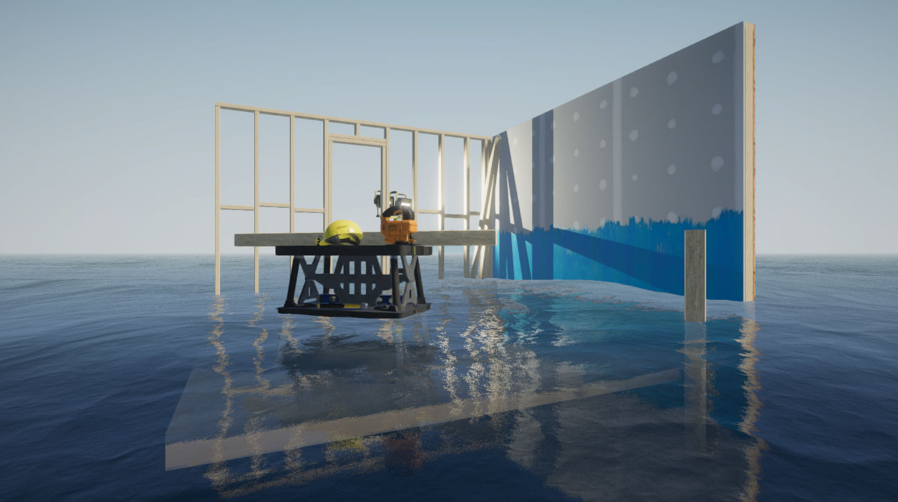
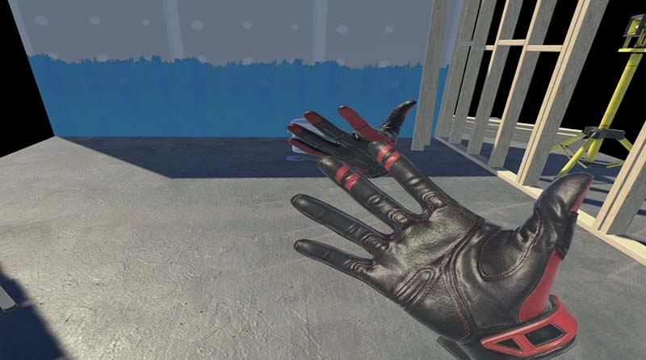
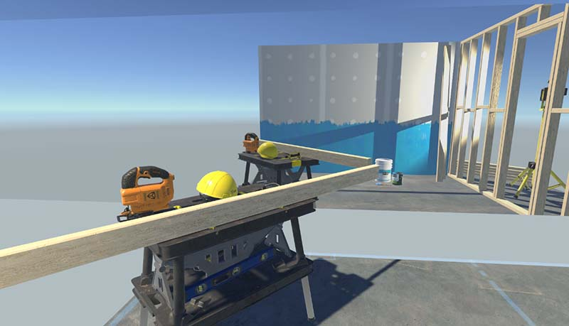
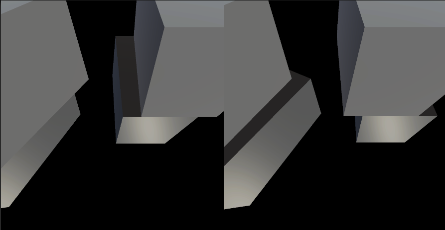
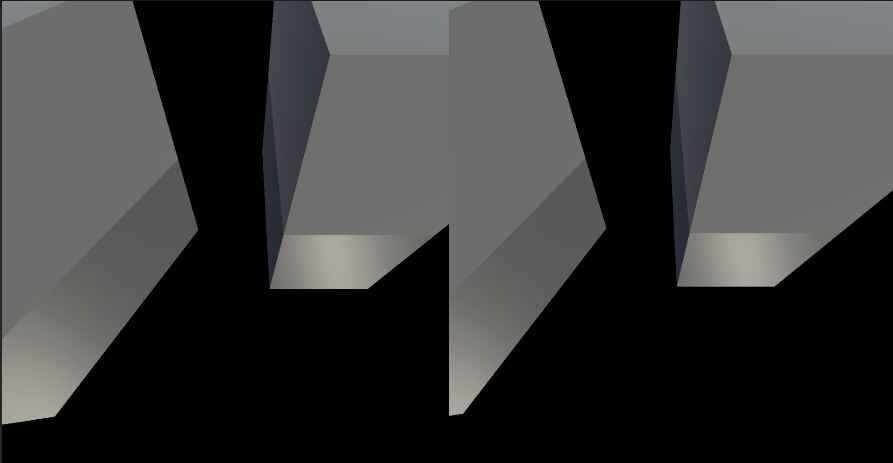
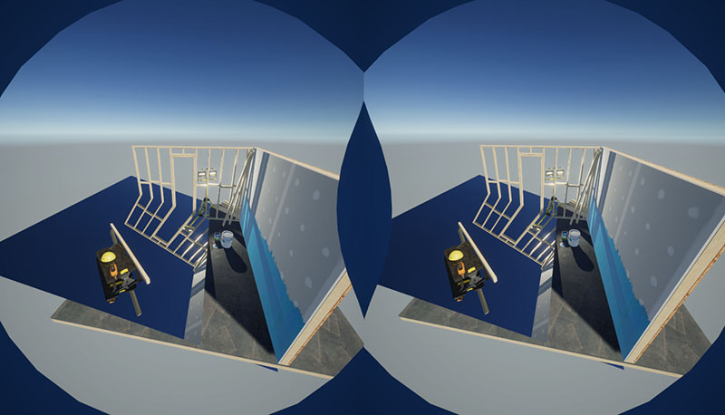

平面反射效果 VR (URP)
前言
前几日去HDRP下试验了各种效果在VR下的可用性，结果是一塌糊涂。像屏幕空间反射、或者Planar
probe这种效果官方压根就没打算支持VR，只能自力更生了。
本着柿子捡软的捏的原则，先从复刻平面探针入手吧。
如果不考虑VR这个实现其实不难，但Unity的单通道渲染实在是太不成熟了，坑一个接一个，这次记录一下踩坑教训。
仓库Demo地址


分析
去HDRP的管线下看了半天，平面反射探针的实现和HDRP耦合的太高了，很难分离开直接移植到URP下，但大体思路就是用一个独立的相机去渲染到一张贴图上。然后基于这张贴图去玩各种花活。
出于性能考虑，就不单独去生成一个相机再去渲染了，还是直接在RenderFeature的层面，重写相机的位置和视锥体以及剔除，直接绘制，能节省很多开销。
填坑
非VR实现
思路很简单，先看非VR下的实现。
在ScriptableRenderPass中
CoreUtils.SetRenderTarget(cmd, m_MirrorTexture, ClearFlag.All, Color.clear);
var mirrorPos = MirrorPlanar.mirrorPos(MirrorPlanar.Plane,camTransform.position);
var viewM = MirrorPlanar.GetViewMat(camTransform.position, rotation);
var projectionMatrix = camera.projectionMatrix;
projectionMatrix = GL.GetGPUProjectionMatrix(projectionMatrix, cameraData.IsCameraProjectionMatrixFlipped());
cmd.SetGlobalVector(worldSpaceCameraPos,new Vector4(mirrorPos.x,mirrorPos.y,mirrorPos.z,0));
RenderingUtils.SetViewAndProjectionMatrices(cmd, viewM, projectionMatrix, false);
这里通过原Camera的坐标和旋转，以及要镜像的平面，生成了虚拟相机的坐标以及View矩阵和投影矩阵。然后写入shader中，覆盖了原相机的相机矩阵和投影矩阵。
这里不要忘记连带worldSpaceCameraPos一起写进去。
context.ExecuteCommandBuffer(cmd);
cmd.Clear();
context.DrawRenderers(cullingResults, ref drawingSettings, ref m_FilteringSettings);
context.DrawSkybox(cameraData.camera);
cmd.SetGlobalTexture(s_MirrorTextureID, m_MirrorTexture.nameID);
var viewMatrix = camera.worldToCameraMatrix;
RenderingUtils.SetViewAndProjectionMatrices(cmd, viewMatrix, cameraData.GetGPUProjectionMatrix(),false);然后就是绘制，这里可以在之前通过设置layerMask等来控制要绘制的物体，防止地板遮挡等问题的出现。
绘制结束别忘记把之前重载的属性恢复回来。
这样就相当于从镜子的另一面用相同的相机绘制到了一张RT上。
然后是Shader部分，这里就很简单了
TEXTURE2D_X(_MirrorTex);
SAMPLER(sampler_MirrorTex);
half4 frag(Varyings input):SV_Target
{
UNITY_SETUP_STEREO_EYE_INDEX_POST_VERTEX(input);
float2 screenUV = input.positionHCS / _ScreenParams;
screenUV.x = 1 - screenUV.x;
return SAMPLE_TEXTURE2D_X(_MirrorTex, sampler_MirrorTex, screenUV) * 0.8;
return 1;
}
拿到屏幕坐标，反转一下X轴，去采样之前渲染的那张RT就好了。

VR单通道模式下实现
然后天坑就来了
第一个问题就是如何获取左右眼的世界坐标。
本来使用的是unity
XR中的函数来获取，但这个支持的并不好，比如unity自带的mock
hmd就获取不到。简单列一下代码吧。
public static Vector3 GetEyePosition(Side eye)
{
if (XRSettings.enabled)
{
Vector3 pos;
InputDevice device = InputDevices.GetDeviceAtXRNode(XRNode.Head);
if (device.isValid)
{
Debug.Log($"{device} isValid");
if (device.TryGetFeatureValue(eye == Side.Left ? CommonUsages.leftEyePosition : CommonUsages.rightEyePosition,out pos))
return pos;
}
Debug.LogError("can not find eyePos");
return default(Vector3);
}
else
{
return Camera.main.transform.position;
}
}
最后还是通过Camera的View矩阵来获取比较准确。可能是我孤陋寡闻了，真不知道为什么这种常用的属性Unity竟然不提供一个简便的方式来获取。
var leftEyePos = camera.GetStereoViewMatrix(Camera.StereoscopicEye.Left).inverse.GetColumn(3);
本以为就那么简单，可最终的结果确怎么也对不上。折腾了半天打印了VR下的投影矩阵一看，才发现VR下左右眼的视锥体竟然不是个对称的视锥体。
之前一直使用public static Matrix4x4 Perspective(float fov, float aspect, float zNear, float zFar)这个函数来生成投影矩阵，导致我忘记了视锥体还有不对称这种情况。
于是改用camera.GetStereoProjectionMatrix(Camera.StereoscopicEye.Left);来获取，但结果还是有误差。

这里猜一下就猜到还是因为视锥体左右不对称引起的，直觉告诉我，只要反转投影矩阵的第一行（也就是对最终X轴有影响的）的第三个参数（这个数值会和观察空间的深度相乘，最终会影响像素的左右偏移程度）就可以了，
leftPMat[8] *= -1;
rightPMat[8] *= -1;
OK，搞定。

渲染镜子背面问题
当镜子背后有物体时，也会被一同渲染到镜子上。
能想到的办法要不就通过layerMask来过滤，要不就完全重构上面的代码。
以镜子作为镜像后的相机的近平面，利用投影矩阵刚好剔除了这部分物体。
最终通过这篇文章Unity
Shader-反射效果（CubeMap，Reflection Probe，Planar Reflection，Screen
Space Reflection）才知道已经有前人总结出了斜视锥体裁剪。
所以最棘手的问题也解决了。只要在求出视角矩阵和投影矩阵后，再依据平面变换一次投影矩阵即可。
var planeTr = MirrorPlanar.Plane;
var normal = planeTr.forward;
var d = -Vector3.Dot(normal, planeTr.position);
var plane = new Vector4(normal.x, normal.y, normal.z, d);
projectionMatrix = CalculateObliqueMatrix(plane,viewM,projectionMatrix);
......
//如果是VR下要分别对左右眼都变换一次
leftPMat = CalculateObliqueMatrix(plane,leftViewM,leftPMat);
rightPMat = CalculateObliqueMatrix(plane,rightViewM,rightPMat);
CalculateObliqueMatrix函数请去原文查阅。

镜像坐标、旋转和矩阵
虽然直觉告诉我肯定有个简便和优雅的方法来求一个相机相对于空间任意平面的对称相机的方法，但实在是懒的想了，用了最笨的办法来求。
如果有哪位大神知道，还烦请留言告诉我。
public static Quaternion mirrorRot(Transform plane, Quaternion cam)
{
var forward = plane.forward;
var reflect = Vector3.Reflect(cam * Vector3.forward, forward);
var reflectup = Vector3.Reflect(cam * Vector3.up, forward);
return Quaternion.LookRotation(reflect, reflectup);
}
public static Vector3 mirrorPos(Transform plane, Vector3 oldPos)
{
var forward = plane.forward;
var planPos = plane.position;
var dis = planPos - oldPos;
var cros = Vector3.Cross(dis, forward).normalized;
var ccos = Vector3.Cross(cros, forward);
var refDis = Vector3.Reflect(dis, ccos);
return refDis + planPos;
}
public static Matrix4x4 GetViewMat(Vector3 oldPos, Quaternion oldRot)
{
var newPos = mirrorPos(Plane, oldPos);
var newRot = mirrorRot(Plane, oldRot);
return Matrix4x4.TRS(newPos, newRot, new Vector3(1, 1, -1)).inverse;
}
2022/07/05 更新
一个更简便的取对称点位置的函数，同样来自Unity
Shader-反射效果（CubeMap，Reflection Probe，Planar Reflection，Screen
Space Reflection）
但这篇文章里构建的反射矩阵最终的结果并不正确，这会导致模型用反面渲染。
public static Vector3 mirrorPos(Transform plane, Vector3 oldPos)
{
var normal = plane.forward;
var d = -Vector3.Dot(normal, plane.position);
return oldPos - 2 * (Vector3.Dot(oldPos, normal) + d) * normal;
}
问题
视锥体裁剪
这里视锥体裁剪使用的还是之前的裁剪矩阵，要想正确构建一个适用于左右眼的裁剪矩阵太复杂了，干脆弄个超大的视锥体，等同于不要裁剪。
CullingResults cullingResults;
var cullMat = Matrix4x4.Frustum(-1, 1, -1, 1, 0.0000001f, 10000000f);
camera.cullingMatrix = cullMat * viewM;
camera.TryGetCullingParameters(out var cullingParameters);
cullingResults = context.Cull(ref cullingParameters);
阴影剔除和附加光源裁剪的问题
这里暂时没有太好的解决方案，不清楚URP绘制阴影的过程能否被干预，如果镜子中的物体没有在正常相机内有阴影的话，镜子中也不会有阴影。
这里去看HDRP的平面反射探针时也发现了，HDRP是真的虚拟了一个相机，重新绘制了阴影，包括后处理等一应俱全，这会增加不少性能消耗。
而这里这种方法，在URP官方示例场景下，开关效果GPU时间增加了1.7ms。
天空盒问题
这是官方已知的BUG，SPR管线下绘制天空盒到RT上需要手动将ZClip关闭。